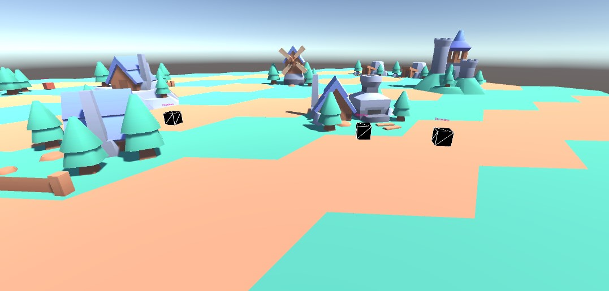
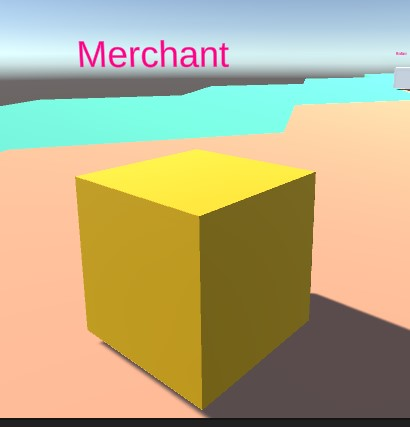
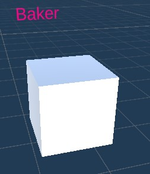
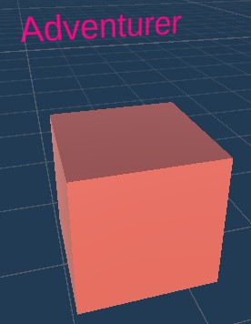
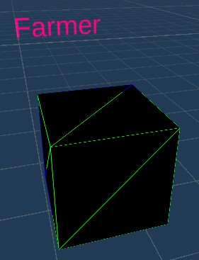
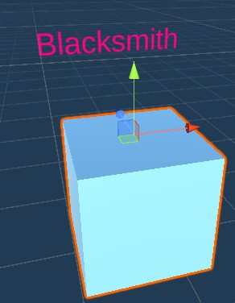
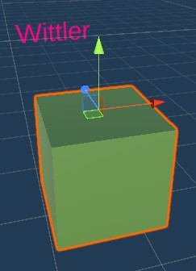

This project was done for my final hand in for university. The main goal of this project was to be able to simulate a small village using GOAP ai to enhance a worlds feel and not have AI wanderlessly or repetetivly doing tasks.
The first important thing I should explain is what actually is GOAP. GOAP stands for goal oriented action planning. In reality this can be more easily visualised as a bag with a list of tasks written inside which the AI can complete. Each task has 3 things: A requirement; a weight; an outcome. When an AI wants to complete a goal which has been triggered it will then work backwards from the goal down all task list possibilities to figure out which set of instructions it should use based of the total weight of that task list. These weights being decided by the desired actions I would like the ai to perform more frequently.
In my simulation I choose to keep it relatively small so the only AI's which are used to simulate this town are: Adventurer, Baker, Farmer, Merchant, Blacksmith, Wittler.
Firstly all AI have 1 task - Walk. This is because no matter what task they would like to achieve part of completing the task is being able to walk to the location of the task.
In there list of goals all AI also get the following tasks they wish to accomplish.
Store item: This is a task in which an ai can store an item they have picked and place it in the storehouse.
Get food: This one being fairly obvious a task so that all the ai can eat and survive (once there hunger hits 0 they will die).
Finally Idle: This isn't a goal persay but all ai needed a passive goal to do when they had no requirements to do anything else hence this goal being made
This AI unfortunatly only has no tasks bar walking but one goal that is to sell. This is so other AI's when they are unable to get the resources they need from within the town are able to go and buy what they need from this AI.
While this could have been a building having the freedom to change this tool into a travelling merchant/delivery service in the future ultimately made me decide to have it be a none stagnant AI.


This AI was designated with the role of keeping all of the other villagers fed. This meant it needed only one new goal - To create food. This goal has a requirement of needing wheat and is one of the most called goals due to the fact that all the ai needed food.
The baker then needed 2 more tasks to effectivly accomplish this goal: Get wheat and Buy Wheat.
All get and buy actions are the same. It will go and retrieve the item from the storehouse or if none is available will then buy from the merchant instead to meet the demand.
I never truly got to raise this AI to its full potential during the length of the project as in the end they just became glorified harvesters of resources. The goals that were added are Harvest Ore and Harvest Wood. While there additional goals are Get Axe and Get Pickaxe.
Taking this project forward into the future I would like to make a larger scale model of this simulation where I could use it for dnd which would allow this ai to flourish more however for now they are just left to be harvesters which use the toools other AI creates.


This ai was the first and backbone of this project when I started creating everything due to one simple reason: Without wheat no bread can be made so no food distributed. This also resulted in this being one of the simplest ai only having one goal and action: HarvestWheat for the goal and Gethoe for the action. This usually means it is the AI which has the least up time as its only goal is triggered by the wheat field needing harvesting.
While it is simple without this singular ai none of the others would be able to function so it is the core of this whole system.
The Blacksmith has the most goals out of any of the other ai's due to one simple reason:Nearly every tool used in medieval times needed metal. Even though its goal list of 5 is long it is all the same action: Create X item. All ai's for there task must come here at some point bar the baker so generally he is in high demand. The same goes for this AI's task list while there are many all of its actions are just buy or get actions. So while looking the most complex on the surface unfortunatly is the same level of complexity as the others. Moving forward I would like to add an apprenticeships track to to make these AI more complex as this would allow for more diverse use of this area.


Finally the last AI the wittler. This AI was created out of the fact a blacksmith probably wouldn't make his own handles. So the only goal this ai has is to create a handle. To this end it has a get and buy wood task assigned to it so it can get the wood it needs to make the handles for the blacksmith.